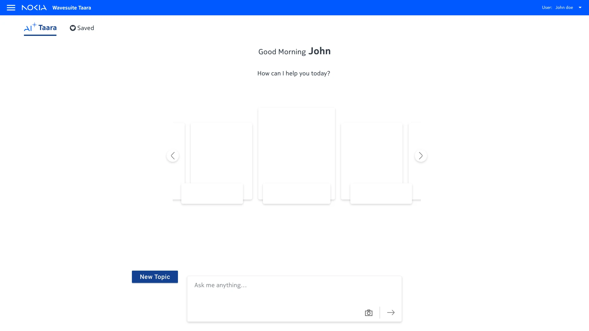
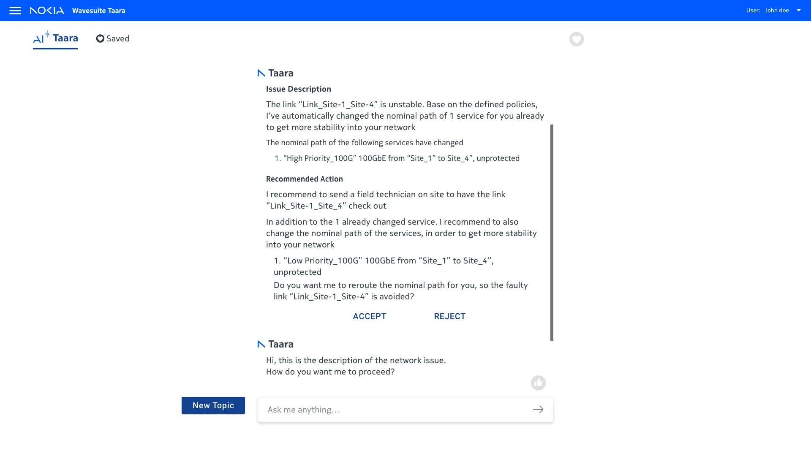
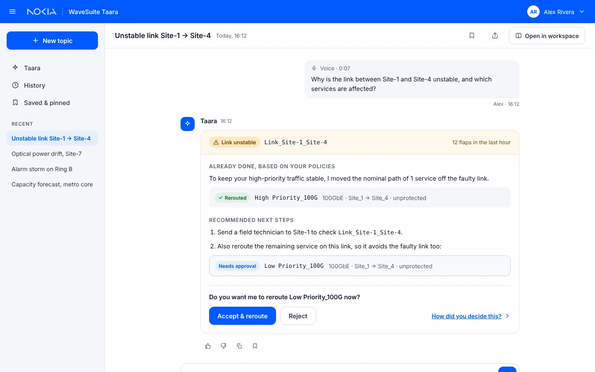
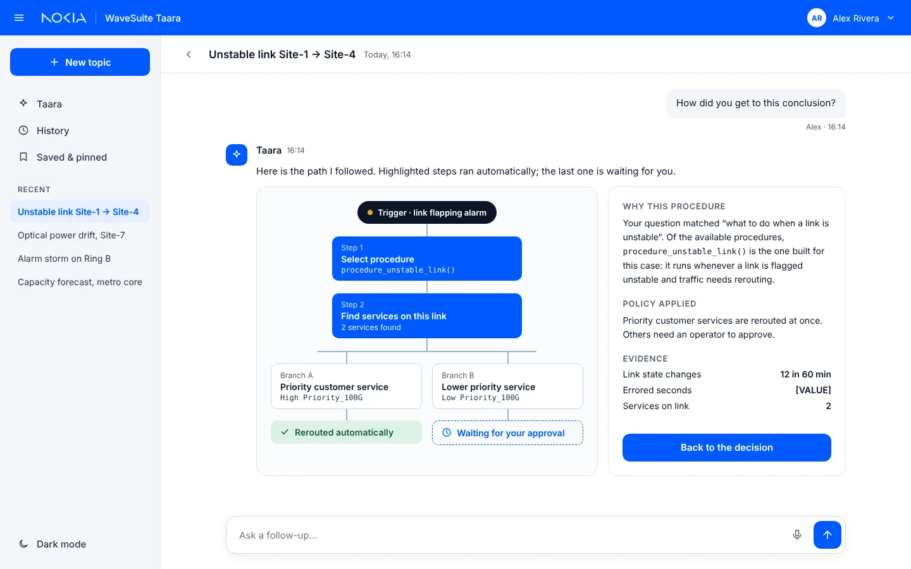
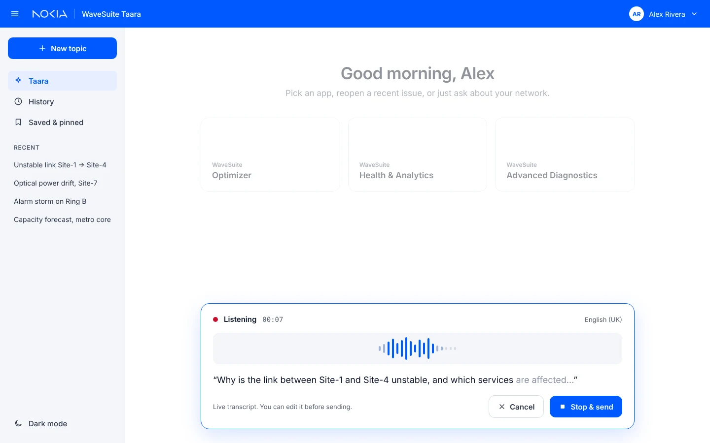
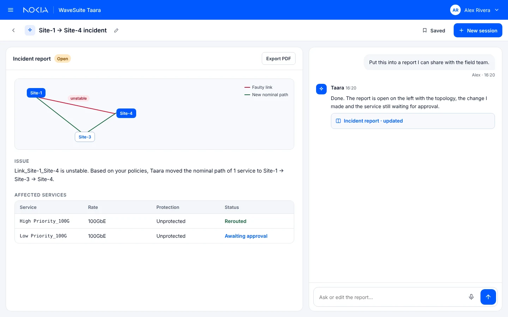
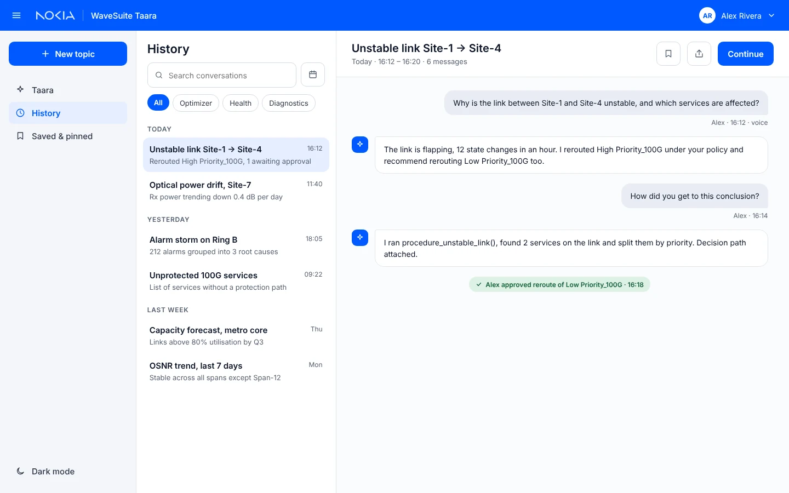
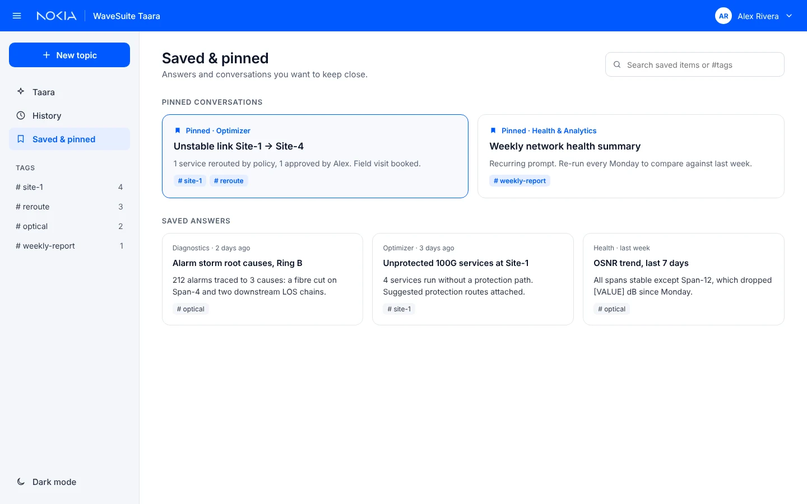
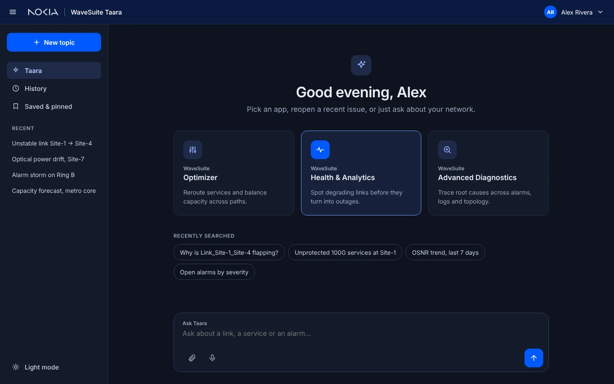

Automation operators can’t see is automation they won’t trust
WaveSuite is Nokia’s software suite for running optical transport networks. Taara is an AI layer on top of it: operators ask in plain language, and Taara explains issues, recommends fixes and can act on policy.
Four rules every screen had to follow
- Show what was doneEvery automatic action is stated first, in plain words.
- Ask before actingAnything outside policy waits for a clear Accept or Reject.
- Explain on demand“Why?” is always one click away, never forced on the reader.
- Never lose the threadHistory, pins and reports keep every decision findable.
From scattered explorations to one shell
The 2023–24 work explored centred chat, a split canvas, tabbed chats, voice and dark mode at once. The refinement kept what worked from each and folded them into one sidebar-based navigation model, in the Nokia logo blue.



One card: done, recommended, decide
- Already done. What Taara changed under policy, marked “Rerouted”.
- Recommended. Next steps, with the pending service marked “Needs approval”.
- Your call. One question, Accept or Reject, and a link to the reasoning.
Reasoning you can read in seconds
The raw procedure graph became a short top-down path: trigger, procedure, affected services, two branches. Each branch ends in its status in words, and the policy and evidence sit beside it.


Ask hands-free, check before sending
The composer turns into the voice panel in place. A live transcript shows what Taara heard, and labelled Cancel and “Stop & send” buttons replace a bare close icon.
History and reports keep the thread
A split workspace turns a chat into a shareable incident report. History is searchable and filterable by app, and important chats and answers can be pinned and tagged.



One shell, light and dark
Nokia logo blue with neutral greys, Inter for interface text and a monospace face for link and service IDs. Text meets WCAG AA contrast in both themes, controls are at least 44px, and status is always written, not shown by colour alone.

Trust is designed, not assumed
- A shared interaction model that aligned Nokia teams on how Taara should behave
- Issue-card and reasoning patterns carried into the WaveSuite design system
- Voice, history and dark-mode concepts defined for the next phase
- Show the automatic action first; hide nothing.
- Explanations work best on demand, not by default.
- Exploring many layouts early made the final shell simpler.